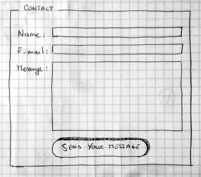

The first article in our series provides your very first experience of creating an HTML form, including designing a simple form, implementing it using the right HTML elements, adding some very simple styling via CSS, and how data is sent to a server.
| Prerequisites: | Basic computer literacy, and a basic understanding of HTML. |
|---|---|
| Objective: | To gain familiarity with what HTML forms are, what they are used for, how to think about designing them, and the basic HTML elements you'll need for simple cases. |
What are HTML forms?
HTML Forms are one of the main points of interaction between a user and a web site or application. They allow users to send data to the web site. Most of the time that data is sent to the web server, but the web page can also intercept it to use it on its own.
An HTML Form is made of one or more widgets. Those widgets can be text fields (single line or multiline), select boxes, buttons, checkboxes, or radio buttons. Most of the time those widgets are paired with a label that describes their purpose — properly implemented labels are able to clearly instruct both sighted and blind users on what to enter into a form input.
The main difference between a HTML form and a regular HTML document is that most of the time, the data collected by the form is sent to a web server. In that case, you need to set up a web server to receive and process the data. How to set up such a server is beyond the scope of this article, but if you want to know more, see Sending form data later in the module.
Designing your form
Before starting to code, it's always better to step back and take the time to think about your form. Designing a quick mockup will help you to define the right set of data you want to ask your user. From a user experience (UX) point of view, it's important to remember that the bigger your form, the more you risk losing users. Keep it simple and stay focused: ask only for that data you absolutely need. Designing forms is an important step when you are building a site or application. It's beyond the scope of this article to cover the user experience of forms, but if you want to dig into that topic you should read the following articles:
- Smashing Magazine has very good articles about forms UX, but perhaps the most important is their Extensive Guide To Web Form Usability.
- UXMatters is also a very thoughtful resource with good advice from basic best practices to complex concerns such as multi-page forms.
In this article, we'll build a simple contact form. Let's make a rough sketch.

Our form will contain three text fields and one button. We are asking the user for their name, their e-mail and the message they want to send. Hitting the button will send their data to a web server.
Active learning: Implementing our form HTML
Ok, now we're ready to go to HTML and code our form. To build our contact form, we will use the following HTML elements: <form>, <label>, <input>, <textarea>, and <button>.
Before you go any further, make a local copy of our simple HTML template — you'll enter your form HTML into here.
The <form> element
All HTML forms start with a <form> element like this:
<form action="/my-handling-form-page" method="post"> </form>
This element formally defines a form. It's a container element like a <div> or <p> element, but it also supports some specific attributes to configure the way the form behaves. All of its attributes are optional but it's considered best practice to always set at least the action attribute and the method attribute.
- The
actionattribute defines the location (URL) where the form's collected data should be sent when it is submitted. - The
methodattribute defines which HTTP method to send the data with (it can be "get" or "post").
Note: If you want to dig into how those attributes work, it is detailed in the Sending form data article.
For now, add the above <form> element into your HTML body.
The <label>, <input>, and <textarea> elements
Our contact form is really simple and contains three text fields, each with a label. The input field for the name will be a basic single-line text field, the input field for the e-mail will be a single-line text field that accepts only an e-mail address, and the input field for the message will be a basic multiline text field.
In terms of HTML code we need something like the following to implement these form widgets:
<form action="/my-handling-form-page" method="post">
<div>
<label for="name">Name:</label>
<input type="text" id="name" name="user_name">
</div>
<div>
<label for="mail">E-mail:</label>
<input type="email" id="mail" name="user_mail">
</div>
<div>
<label for="msg">Message:</label>
<textarea id="msg" name="user_message"></textarea>
</div>
</form>
Update your form code to look like the above.
The <div> elements are there to conveniently structure our code and make styling easier (see later in the article). Note the use of the for attribute on all <label> elements; it's a formal way to link a label to a form widget. This attribute references the id of the corresponding widget. There is some benefit to doing this. The most obvious one is to allow the user to click on the label to activate the corresponding widget. If you want a better understanding of the other benefits of this attribute, you can find the details in How to structure an HTML form.
On the <input> element, the most important attribute is the type attribute. This attribute is extremely important because it defines the way the <input> element behaves. You'll find more about this in the native form widgets article later on.
- In our simple example, we use the value
textfor the first input — the default value for this attribute. It represents a basic single-line text field that accepts any kind of text input. - For the second input, we use the value
emailthat defines a single-line text field that only accepts a well-formed e-mail address. This turns a basic text field into a kind of "intelligent" field that will perform some checks on the data typed by the user. You'll find out more about form validation in the Form data validation article later on.
Last but not least, note the syntax of <input> vs. <textarea></textarea>. This is one of the oddities of HTML. The <input> tag is an empty element, meaning that it doesn't need a closing tag. On the contrary, <textarea> is not an empty element, so you have to close it with the proper ending tag. This has an impact on a specific feature of HTML forms: the way you define the default value. To define the default value of an <input> element you have to use the value attribute like this:
<input type="text" value="by default this element is filled with this text" />
On the contrary, if you want to define the default value of a <textarea>, you just have to put that default value between the opening and closing tag of the <textarea> element, like this:
<textarea>by default this element is filled with this text</textarea>
The <button> element
Our form is almost ready; we just have to add a button to allow the user to send their data once they have filled out the form. This is simply done by using the <button> element; add the following just above the closing </form> tag:
<div class="button"> <button type="submit">Send your message</button> </div>
You'll see that the <button> element also accepts a type attribute — this accepts one of three values: submit, reset, or button.
- A click on a
submitbutton (the default value) sends the form's data to the web page defined by theactionattribute of the<form>element. - A click on a
resetbutton resets all the form widgets to their default value immediately. From a UX point of view, this is considered bad practice. - A click on a
buttonbutton does... nothing! That sounds silly, but it's amazingly useful for building custom buttons with JavaScript.
Note: You can also use the <input> element with the corresponding type to produce a button, for example <input type="submit">. The main advantage of the <button> element is that the <input> element only allows plain text as its label whereas the <button> element allows full HTML content, allowing more complex, creative button text.
Basic form styling
Now that you have finished writing your form's HTML code, try saving it and looking at it in a browser. At the moment, you'll see that it looks rather ugly.

Note: If you don't think you've got the HTML code right, try comparing it with our finished example — see first-form.html (also see it live).
Forms are notoriously tricky to style nicely. It is beyond the scope of this article to teach you form styling, so for the moment, we will just get you to add some CSS to make it look OK.
First of all, add a <style> element to your page, inside your HTML head. It should look like so:
<style> </style>
Inside the style tags, add the following CSS, just as shown:
form {
/* Just to center the form on the page */
margin: 0 auto;
width: 400px;
/* To see the outline of the form */
padding: 1em;
border: 1px solid #CCC;
border-radius: 1em;
}
form div + div {
margin-top: 1em;
}
label {
/* To make sure that all labels have the same size and are properly aligned */
display: inline-block;
width: 90px;
text-align: right;
}
input, textarea {
/* To make sure that all text fields have the same font settings
By default, textareas have a monospace font */
font: 1em sans-serif;
/* To give the same size to all text fields */
width: 300px;
box-sizing: border-box;
/* To harmonize the look & feel of text field border */
border: 1px solid #999;
}
input:focus, textarea:focus {
/* To give a little highlight on active elements */
border-color: #000;
}
textarea {
/* To properly align multiline text fields with their labels */
vertical-align: top;
/* To give enough room to type some text */
height: 5em;
}
.button {
/* To position the buttons to the same position of the text fields */
padding-left: 90px; /* same size as the label elements */
}
button {
/* This extra margin represent roughly the same space as the space
between the labels and their text fields */
margin-left: .5em;
}
Now our form looks much less ugly.

Note: You can find it on GitHub at first-form-styled.html (also see it live).
Sending form data to your web server
The last part, and maybe the trickiest, is to handle form data on the server side. As we said before, most of the time an HTML Form is a convenient way to ask the user for data and to send it to a web server.
The <form> element will define where and how to send the data thanks to the action attribute and the method attribute.
But it's not enough. We also need to give a name to our data. Those names are important on both sides; on the browser side, it tells the browser which name to give each piece of data, and on the server side, it lets the server handle each piece of data by name.
To name the data in a form you need to use the name attribute on each form widget that will collect a specific piece of data. Let's look at some of our form code again:
<form action="/my-handling-form-page" method="post">
<div>
<label for="name">Name:</label>
<input type="text" id="name" name="user_name" />
<div>
<div>
<label for="mail">E-mail:</label>
<input type="email" id="mail" name="user_email" />
</div>
<div>
<label for="msg">Message:</label>
<textarea id="msg" name="user_message"></textarea>
</div>
...
In our example, the form will send 3 pieces of data named "user_name", "user_email", and "user_message". That data will be sent to the URL "/my-handling-form-page" using the HTTP POST method.
On the server side, the script at the URL "/my-handling-form-page" will receive the data as a list of 3 key/value items embodied in the HTTP request. The way this script will handle that data is up to you. Each server-side language (PHP, Python, Ruby, Java, C#, etc.) has its own mechanism. It's beyond the scope of this guide to go deeply into that subject, but if you want to know more, we have provided some examples in the Sending form data article.
Summary
Congratulations, you've built your first HTML form. It looks like this live:
That's only the beginning, however — now it's time to take a deeper look. HTML forms are way more powerful than what we saw here and the other articles of this guide will help you to master the rest.
In this module
- Your first HTML form
- How to structure an HTML form
- The native form widgets
- Sending form data
- Form data validation
- How to build custom form widgets
- Sending forms through JavaScript
- HTML forms in legacy browsers
- Styling HTML forms
- Advanced styling for HTML forms
- Property compatibility table for form widgets